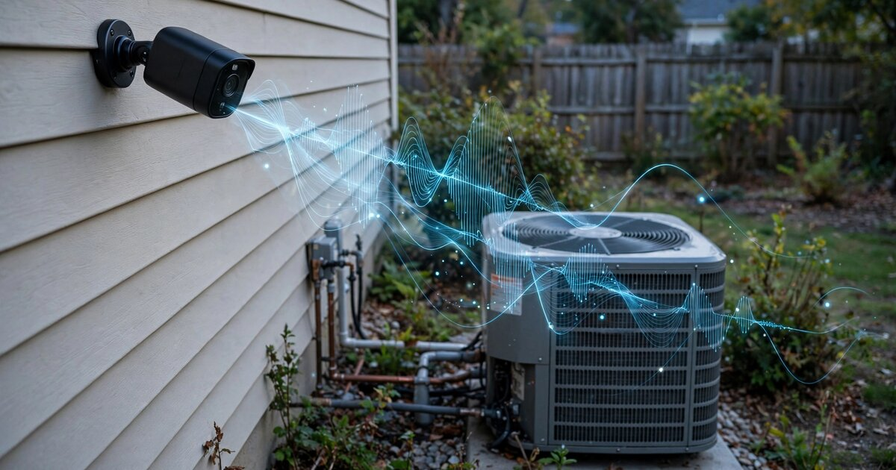

System and Method for Predictive Maintenance of Residential HVAC Compressor Units Using Ambient Audio Capture from Existing Outdoor Security Cameras and Edge-Deployed Acoustic Anomaly Detection

Abstract
Disclosed is a system and method for continuously monitoring the operational health of residential heating, ventilation, and air conditioning (HVAC) condenser and compressor units by repurposing the built-in microphones of existing outdoor security cameras. The system captures ambient audio during HVAC compressor operating cycles, extracts acoustic features including spectral centroid drift, harmonic ratio degradation, startup transient profile changes, and sub-harmonic emergence, and classifies compressor health state using an edge-deployed temporal convolutional network (TCN). The system correlates acoustic signatures with outdoor ambient temperature retrieved from weather APIs to normalize for load-dependent frequency shifts, constructs a per-unit degradation baseline over a 14-day commissioning window, and generates tiered maintenance alerts (advisory, schedule service, urgent shutdown) when acoustic anomaly scores exceed learned thresholds. The system requires no additional hardware beyond an outdoor security camera positioned within 15 meters of the HVAC condenser unit.
Field of the Invention
This invention relates to predictive maintenance of residential HVAC systems, specifically to non-contact acoustic health monitoring of compressor and condenser units using repurposed consumer security camera microphones and on-device machine learning inference.
Background
Residential HVAC systems represent the single largest energy expenditure in U.S. homes. The U.S. Energy Information Administration's 2020 RECS survey found that space heating and air conditioning together account for 50% of residential energy consumption, with the average household spending approximately $1,000-$2,000 annually on heating and cooling. The installed base of central air conditioning systems in the United States exceeds 100 million units (EIA, 2020 RECS Table HC6.1).
Compressor failure is the most expensive HVAC repair. According to industry service data aggregated by Angi, residential compressor replacement costs range from $1,500 to $3,500 for the part alone, with total replacement including labor reaching $2,500 to $5,500. In many cases, a failed compressor results in full outdoor unit replacement at $3,500 to $7,500 because the compressor accounts for 60-70% of the unit's value. Catastrophic compressor failure during peak cooling season (July-August) compounds costs through emergency service premiums (25-50% surcharge) and temporary cooling rental ($200-400/week).
Current approaches to residential HVAC maintenance are predominantly reactive or calendar-based:
- Reactive maintenance: Homeowners call for service after the system fails, typically incurring maximum repair cost and discomfort. ACHR News survey data indicates that 78% of residential HVAC service calls are reactive rather than preventive.
- Calendar-based maintenance: Annual or semi-annual service contracts ($150-300/year) where a technician inspects the system regardless of condition. These visits catch some issues (dirty coils, low refrigerant) but occur too infrequently to detect rapid-onset failures (bearing seizure, valve leaks) and too frequently for healthy units, wasting homeowner money and technician time.
- Smart thermostat diagnostics: Products like Nest and Ecobee monitor runtime, cycle frequency, and indoor temperature recovery rates to infer system health. Nest's maintenance reminders track filter change intervals and alert on unusually long cooling cycles. These approaches are limited to electrical and thermal signals available at the thermostat; they cannot detect mechanical degradation modes (bearing wear, valve chattering, fan imbalance) that produce acoustic signatures well before they affect system-level performance metrics.
Acoustic monitoring for HVAC health has been validated in commercial and industrial settings. Glowacz (Applied Acoustics, 2021) demonstrated 97.3% classification accuracy for compressor fault types using acoustic features from dedicated microphones at distances under 1 meter. Verma et al. (Mechanical Systems and Signal Processing, 2020) showed that refrigerant charge level can be estimated within ±5% from compressor acoustic emissions using mel-frequency cepstral coefficients (MFCCs) and a support vector machine. However, these systems require purpose-built sensor installations costing $500-2,000 per unit, making them economically viable only for commercial rooftop units ($15,000+ value) and not for residential systems ($3,000-7,000 value).
Meanwhile, the installed base of outdoor security cameras with built-in microphones has grown rapidly. Strategy Analytics estimated 95 million smart home cameras installed in the U.S. by 2024, with outdoor models accounting for approximately 40% (38 million units). Major platforms (Ring, Nest/Google, Arlo, Wyze, Eufy) include MEMS microphones with specifications adequate for HVAC monitoring: frequency response 100 Hz to 10 kHz, SNR 60-65 dB, sampling rates of 16-48 kHz. A significant fraction of these cameras are physically positioned on exterior walls within acoustic range of HVAC condenser units, which are typically installed on concrete pads adjacent to the home's exterior wall.
The gap in the art is a system that: (a) repurposes existing outdoor security camera microphones as HVAC acoustic health sensors without additional hardware, (b) performs compressor health classification at the edge using ambient audio rather than contact sensors, (c) normalizes acoustic signatures for ambient temperature and load variation, and (d) generates predictive maintenance alerts that reduce both unnecessary service visits and surprise failures.
Detailed Description
1. System Architecture
The system operates as a software module deployed on existing security camera hardware or its associated base station/hub. It comprises four functional blocks: (a) an audio acquisition and HVAC cycle isolation module, (b) an acoustic feature extraction pipeline, (c) an edge-deployed health classification model, and (d) a maintenance alert and reporting module. The system integrates with the camera's existing audio processing pipeline, requiring only firmware-level access to the raw or lightly-processed audio stream.
For cameras that process audio on a cloud backend (Ring, Nest), the system can alternatively be deployed as a cloud-side module that processes uploaded audio segments flagged as containing compressor activity. For cameras with local processing capability (Eufy, some Arlo models, NVR-based systems), the system runs entirely on-device.
2. HVAC Compressor Cycle Isolation
The first processing stage isolates audio segments corresponding to HVAC compressor operation from the continuous ambient audio stream. Compressor startup produces a distinctive acoustic event: a 200-800 ms transient with spectral energy concentrated between 50 and 250 Hz (the compressor motor's fundamental and low-order harmonics), followed by steady-state operation at a characteristic frequency determined by the compressor type and refrigerant pressure differential.
Cycle detection uses a two-stage approach:
- Energy threshold detector: A running RMS energy calculation in the 40-300 Hz band identifies candidate compressor-on events when energy exceeds a learned baseline by more than 12 dB for at least 500 ms. The baseline is computed as the 10th percentile of 40-300 Hz band energy over the preceding 30 minutes, adapting to changing ambient noise conditions (traffic, wind, rain).
- Startup transient classifier: A lightweight binary CNN (3 convolutional layers, 8/16/32 filters, ~12 KB quantized) processes the first 2 seconds of each candidate event as a mel-spectrogram (64 mel bins, 40-4000 Hz) and classifies it as compressor-startup vs. non-HVAC (car door, dog bark, thunder, lawn mower). Training data includes 50,000+ labeled compressor startup events across 15 compressor manufacturers and 200+ ambient noise categories. False positive rate target: < 2% per 24-hour period.
Once a compressor-on event is confirmed, the system captures audio for the duration of the operating cycle (typically 8-25 minutes for residential cooling) plus a 30-second post-shutdown tail to capture shutdown transient characteristics.
3. Acoustic Feature Extraction
For each confirmed compressor operating cycle, the system extracts the following acoustic features from 5-second analysis windows with 2.5-second overlap:
- Fundamental frequency (F0) and harmonics: The compressor motor's rotational speed produces a fundamental frequency (typically 50-60 Hz for single-phase, 28-35 Hz for scroll compressors) with harmonics at integer multiples. F0 is extracted via autocorrelation of the bandpassed signal (30-200 Hz). Harmonic amplitudes are measured at 2F0, 3F0, 4F0, and 5F0 using narrow-band (±2 Hz) DFT bins. The harmonic-to-fundamental ratio (HFR) quantifies the relative strength of harmonics: healthy compressors maintain HFR < 0.3 (fundamentals dominate), while bearing degradation increases HFR to 0.5-0.8 as worn bearings generate broadband noise that fills inter-harmonic frequency bins.
- Spectral centroid and spread: The first and second spectral moments of the 100-4000 Hz band. Healthy compressors exhibit spectral centroids between 200 and 600 Hz with low spread. Refrigerant charge loss shifts the centroid upward by 50-150 Hz as the compressor works harder against reduced suction pressure. Valve chattering produces intermittent centroid spikes above 1000 Hz.
- Startup transient duration and shape: The time from initial motor energization to steady-state acoustic signature, measured as the interval until spectral centroid variance drops below a threshold (2% of mean). Healthy compressors reach steady state in 400-1200 ms. Hard-start conditions (capacitor degradation, high head pressure) extend startup transients to 2000-5000 ms with characteristic spectral "wobble" as the motor struggles to reach synchronous speed.
- Sub-harmonic content: Energy in frequency bins at F0/2, F0/3, and F0/4. Sub-harmonics are absent in healthy compressors but emerge during bearing race defects, oil starvation, and loose mounting bolts. Sub-harmonic energy exceeding -30 dB relative to F0 indicates mechanical looseness requiring service.
- Modulation depth: Amplitude modulation of the fundamental at frequencies between 0.5 and 20 Hz, computed via envelope detection and FFT of the envelope signal. Low-frequency modulation (0.5-5 Hz) indicates liquid slugging (refrigerant flood-back). Higher-frequency modulation (5-20 Hz) indicates fan blade imbalance or loose panels.
- Shutdown transient profile: The spectral evolution during the 5 seconds following compressor de-energization. Healthy compressors produce a smooth frequency downsweep lasting 2-4 seconds as the motor decelerates. Worn bearings produce irregular deceleration with audible grinding. Equalization pressure rebalancing produces a characteristic "hiss" between 800 and 3000 Hz; its duration and intensity correlate with refrigerant charge level.
4. Temperature-Normalized Baseline Construction
HVAC compressor acoustic signatures vary significantly with outdoor ambient temperature because temperature determines the pressure differential across the compressor (condenser pressure rises with ambient temperature while evaporator pressure is set by indoor setpoint). A compressor operating at 35°C ambient sounds measurably different from the same healthy compressor at 25°C: the fundamental frequency shifts by 1-3 Hz, the spectral centroid moves by 30-80 Hz, and the startup transient extends by 100-300 ms.
The system retrieves hourly ambient temperature from a weather API (OpenWeatherMap, WeatherAPI, or the camera platform's own weather integration) keyed to the camera's registered location. Each extracted feature vector is tagged with the concurrent ambient temperature. During a 14-day commissioning period after system activation, the system builds a temperature-indexed baseline model: feature vectors are grouped into 2°C temperature bins and a per-bin mean and covariance matrix are computed. This produces a temperature-dependent Mahalanobis distance threshold for each feature dimension.
After commissioning, each new compressor cycle's feature vector is compared to its temperature-matched baseline bin. Anomaly scores are computed as the Mahalanobis distance from the temperature-matched centroid. This normalization prevents false alerts from temperature-driven acoustic variation while preserving sensitivity to genuine degradation.
5. Edge-Deployed Health Classification Model
A temporal convolutional network (TCN) processes sequences of per-cycle feature vectors (typically 3-20 cycles per day, depending on season and thermostat settings) to classify compressor health state. The TCN architecture uses dilated causal convolutions with receptive fields spanning 14 days of operating history, enabling detection of slow-onset degradation trends that single-cycle analysis would miss.
The model classifies compressor state into six categories:
- Healthy: All features within temperature-normalized baseline bounds. No action required.
- Dirty condenser coil: Gradual spectral centroid increase (10-30 Hz over 2-4 weeks) with proportional increase in cycle duration. Correlates with reduced airflow over condenser coils due to debris accumulation. Advisory alert: "Clean condenser coils within 30 days."
- Low refrigerant charge: Spectral centroid elevation (50-150 Hz above baseline), reduced shutdown equalization hiss duration, and increased startup transient variability. Schedule-service alert: "Refrigerant charge may be low. Schedule HVAC service within 2 weeks."
- Bearing degradation: Progressive increase in HFR (0.3 to 0.5+ over 4-12 weeks), emergence of sub-harmonic content, and irregular shutdown deceleration profile. Schedule-service alert: "Compressor bearing wear detected. Schedule service before peak season."
- Electrical fault (capacitor/contactor): Extended startup transients (>2000 ms), startup spectral wobble, and intermittent hard-start events. Urgent alert: "Starting components may be failing. Service recommended within 7 days to prevent compressor damage."
- Fan/mechanical looseness: Amplitude modulation at 5-20 Hz, broadband energy increase above 1000 Hz. Advisory alert: "Condenser fan may be imbalanced or panel loose. Inspect within 30 days."
The TCN model is quantized to INT8 for deployment on camera SoCs (e.g., Ambarella CV25, Ingenic T31, Novatek NT98530) or hub processors (e.g., Qualcomm QCS610). Model size: approximately 280 KB. Inference time: < 50 ms per cycle on ARM Cortex-A53 at 1.2 GHz. The model processes stored feature vectors, not raw audio, so computational cost is negligible relative to the camera's video processing workload.
6. Multi-Camera Correlation
In homes with multiple outdoor cameras (front door, backyard, garage), the system correlates compressor detections across cameras to improve classification confidence. A compressor startup event detected simultaneously by two cameras at different distances produces a consistent frequency signature with distance-dependent amplitude ratio. This cross-validation reduces false positive rates from ambient noise events that may register on only one camera. Additionally, the multi-camera geometry enables crude sound source localization via time-difference-of-arrival, confirming that detected events originate from the known HVAC condenser location rather than a neighbor's unit.
7. Privacy-Preserving Design
The system processes only the acoustic features relevant to HVAC monitoring and does not record, store, or transmit human speech or other identifiable audio content. Audio processing occurs in a sandboxed pipeline that: (a) applies a 300 Hz low-pass filter to the audio stream before any feature extraction, eliminating the frequency range used by human speech (300-3400 Hz fundamental) from the analysis path, or alternatively (b) processes full-bandwidth audio but extracts only numerical feature vectors (spectral centroid, HFR, modulation depth, etc.) and discards raw audio within 10 seconds of capture. Feature vectors contain no recoverable speech content. The system's privacy architecture is designed to comply with two-party consent recording statutes (California Penal Code §632, Illinois 720 ILCS 5/14-2) by ensuring that no human-intelligible audio is retained or transmitted.
8. Figures Description
- Figure 1: System architecture showing audio capture from outdoor security camera, compressor cycle isolation, feature extraction pipeline, temperature normalization, TCN health classifier, and alert generation module.
- Figure 2: Spectrograms comparing healthy compressor steady-state operation (clean harmonic structure, F0 at 58 Hz) versus degraded bearings (elevated inter-harmonic noise floor, sub-harmonic at 29 Hz) versus low refrigerant (upward spectral centroid shift, reduced shutdown hiss).
- Figure 3: Temperature-normalized baseline construction showing feature vector clustering across 2°C ambient temperature bins during 14-day commissioning period, with Mahalanobis distance contours.
- Figure 4: Time-series plot of compressor health features over 90-day monitoring period showing gradual bearing degradation: HFR trend from 0.22 to 0.61, sub-harmonic emergence at day 47, and alert escalation from advisory (day 52) to schedule-service (day 71).
- Figure 5: Multi-camera correlation geometry showing two cameras at 5 m and 12 m from condenser unit, with TDOA-based source localization confirming condenser origin versus neighbor's unit at 25 m.
Claims
- A system for predictive maintenance of residential HVAC compressor units, comprising: a software module that processes audio from an existing outdoor security camera's built-in microphone; a compressor cycle isolation module that identifies HVAC compressor startup and shutdown events from the continuous ambient audio stream using energy threshold detection in the 40-300 Hz band and a binary classifier for startup transient verification; an acoustic feature extraction pipeline that computes spectral centroid, harmonic-to-fundamental ratio, startup transient duration, sub-harmonic content, amplitude modulation depth, and shutdown transient profile for each confirmed compressor operating cycle; and an edge-deployed health classification model that categorizes compressor state into at least healthy, dirty condenser coil, low refrigerant charge, bearing degradation, electrical fault, and fan/mechanical looseness based on temporal sequences of extracted feature vectors.
- The system of claim 1, further comprising a temperature normalization module that retrieves ambient temperature from a weather API corresponding to the camera's geographic location, indexes each feature vector by concurrent temperature in discrete bins, and computes anomaly scores as Mahalanobis distance from a temperature-matched baseline centroid constructed during a commissioning period.
- The system of claim 1, wherein the compressor cycle isolation module comprises a two-stage detector: a running RMS energy detector in the 40-300 Hz band that identifies candidate events exceeding a learned noise floor by at least 12 dB for at least 500 ms, followed by a lightweight convolutional neural network that classifies the first 2 seconds of each candidate event as compressor-startup versus non-HVAC ambient noise.
- The system of claim 1, wherein the health classification model is a temporal convolutional network with dilated causal convolutions having a receptive field spanning at least 14 days of compressor operating cycles, enabling detection of slow-onset degradation trends that individual cycle analysis would not detect.
- The system of claim 1, further comprising a privacy-preserving audio pipeline that either applies a low-pass filter below 300 Hz before feature extraction, eliminating human-speech-frequency content, or extracts only numerical feature vectors and discards raw audio within a bounded time window, ensuring no human-intelligible audio is retained or transmitted.
- The system of claim 1, further comprising a multi-camera correlation module that, when multiple outdoor cameras are present within acoustic range of the same HVAC condenser unit, cross-validates compressor detections across cameras using consistent frequency signature verification and time-difference-of-arrival analysis to confirm sound source location.
- A method for predictive maintenance of residential HVAC equipment comprising: repurposing the microphone of an existing outdoor security camera as a non-contact acoustic sensor for HVAC compressor monitoring; isolating compressor operating cycles from continuous ambient audio using energy-based detection and startup transient classification; extracting acoustic health features including spectral centroid, harmonic-to-fundamental ratio, sub-harmonic content, and startup/shutdown transient profiles from each operating cycle; normalizing extracted features against ambient temperature to account for load-dependent acoustic variation; classifying compressor health state using an edge-deployed temporal convolutional network that processes multi-day feature vector sequences; and generating tiered maintenance alerts when classified health state indicates degradation exceeding learned thresholds.
- The method of claim 7, wherein generating tiered maintenance alerts comprises: issuing advisory alerts for conditions correctable by the homeowner (dirty condenser coils, loose panels) with a 30-day action window; issuing schedule-service alerts for conditions requiring professional HVAC technician intervention (low refrigerant, bearing wear) with a 7-14 day action window; and issuing urgent-shutdown alerts for conditions risking imminent compressor damage (severe electrical fault, liquid slugging) with a same-day action recommendation.
- The method of claim 7, further comprising constructing a per-unit acoustic baseline during a commissioning period of at least 7 days, wherein the baseline comprises temperature-indexed mean feature vectors and covariance matrices computed from compressor cycles observed across a range of ambient temperatures, and wherein the baseline adapts over time using exponentially weighted moving averages to account for normal system aging.
- The system of claim 1, wherein the system requires no hardware modifications to the security camera and no additional sensors, and wherein the system operates within the computational budget of the camera's existing system-on-chip or an associated base station processor, with health classification inference consuming less than 100 ms per compressor cycle on an ARM Cortex-A53 class processor.
Implementation Notes
Reference implementation targets the Ring Spotlight Cam / Floodlight Cam product family due to their typical mounting location (exterior wall, 2-4 meters above grade) and proximity to side-yard HVAC condenser installations. The Ring Alarm Pro base station (Qualcomm QCS610) provides sufficient compute for the TCN classifier. Alternative deployment targets include Google Nest Cam (outdoor), Arlo Pro 4, Eufy SoloCam S340, and Wyze Cam v3 Pro, all of which include outdoor-rated MEMS microphones with specifications meeting the minimum requirements described herein (100 Hz to 8 kHz frequency response, SNR > 58 dB).
The startup transient classifier training dataset should be constructed from recordings of at least 15 major compressor manufacturers (Copeland/Emerson, Danfoss, Bristol/York, Tecumseh, Mitsubishi, Daikin, LG, Samsung, Panasonic, GMCC, Hitachi, Kulthorn, Embraco/Nidec, Bitzer, Carrier/Carlyle) across scroll, reciprocating, and rotary compressor types to ensure generalization across the residential HVAC installed base.
Maximum effective monitoring distance depends on ambient noise floor and camera microphone sensitivity. Preliminary analysis suggests reliable operation at camera-to-condenser distances of 3-15 meters in suburban environments (ambient noise floor 35-50 dBA) and 3-8 meters in urban environments (ambient noise floor 50-65 dBA). Rain events (>60 dBA broadband noise) should be excluded from health scoring using weather API precipitation data as a gating signal.
Prior Art References
- U.S. EIA 2020 Residential Energy Consumption Survey (RECS) — heating and cooling account for 50% of residential energy use
- EIA RECS Table HC6.1 — 100M+ central AC units installed in U.S. homes
- Angi cost data — residential compressor replacement $1,500-$3,500 parts, $2,500-$5,500 total
- Glowacz, Applied Acoustics 2021 — 97.3% compressor fault classification from acoustic features
- Verma et al., Mechanical Systems and Signal Processing 2020 — refrigerant charge estimation from compressor acoustics using MFCCs and SVM
- Strategy Analytics — 95M smart home cameras in U.S. by 2024, 40% outdoor
- Nest thermostat maintenance reminders — runtime-based HVAC maintenance alerts
- Li et al., Engineering Applications of AI 2023 — temporal convolutional networks for industrial equipment health monitoring
- TensorFlow Lite for Microcontrollers — on-device ML runtime for edge deployment
- California Penal Code § 632 — two-party consent recording statute
- ACHR News — 78% of residential HVAC service calls are reactive
- Ring Floodlight Cam Wired Pro — outdoor security camera with built-in microphone and audio processing